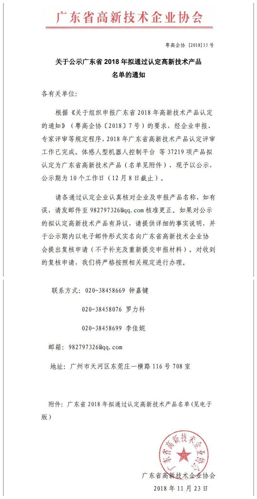

发布日期：2018-11-23
根据《关于组织申报广东省2018年高新技术产品认定的通知》（粤高企协〔2018〕7号）的要求，经企业申报、专家评审等规定程序，现德百祺4项产品“高灵敏度TIS定位终端及系统（车辆专供接线版、ZJ220、ZJ300、车辆专供大电池长待机版）” 成功入选2018年度广东省高新技术产品。
查看全文根据《关于组织申报广东省2018年高新技术产品认定的通知》（粤高企协〔2018〕7号）的要求，经企业申报、专家评审等规定程序，现德百祺4项产品“高灵敏度TIS定位终端及系统（车辆专供接线版、ZJ220、ZJ300、车辆专供大电池长待机版）” 成功入选2018年度广东省高新技术产品。
